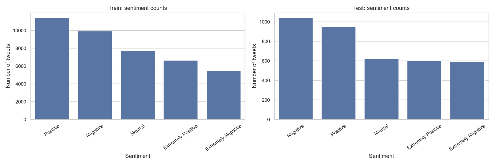
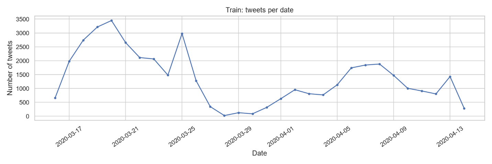
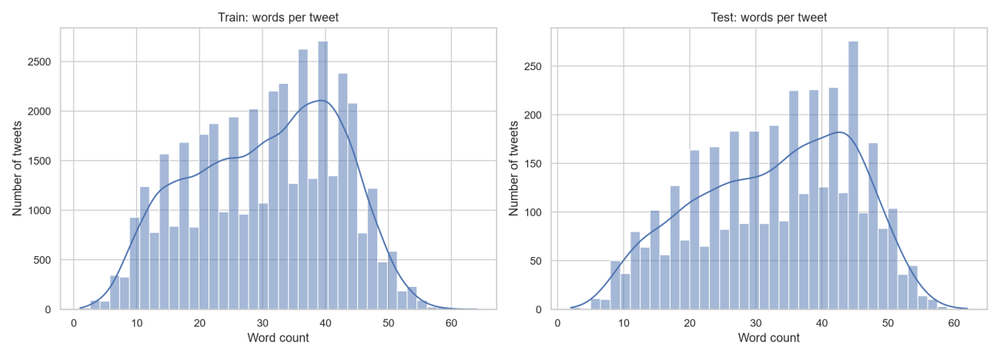
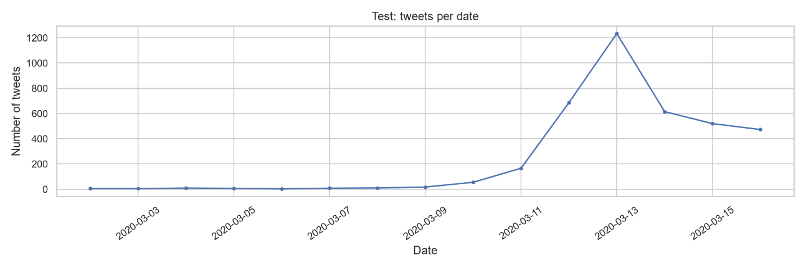

Dataset Proposal & Track
Exploratory Data Analysis
The dataset contains COVID-19-related tweets labeled with one of five sentiment classes.
The analysis below summarizes class balance, tweet length, and the temporal structure of
the supplied training and test splits. The model input is OriginalTweet; the
target is Sentiment.
Training samples
41,157
Test samples
3,798
Sentiment classes
5
Missing tweet texts / labels
0 / 0
1. Sentiment Class Distribution
Positive is the largest training class (11,422; 27.75%), while Extremely Negative is the smallest (5,481; 13.32%). The dataset is moderately imbalanced, but no single class dominates. Accuracy should therefore be reported alongside macro-F1, which weights all five classes equally.

2. Tweet Length and Text Characteristics
Tweets contain informal social-media text, including URLs, hashtags, mentions, and punctuation. Mean tweet length is 204.20 characters and 30.50 whitespace-separated words in the training set, compared with 213.44 characters and 32.91 words in the test set. The observed maximum is 64 words in training and 62 words in testing.

| Statistic | Training set | Test set |
|---|---|---|
| Mean characters per tweet | 204.20 | 213.44 |
| Median characters per tweet | 215 | 227 |
| Mean words per tweet | 30.50 | 32.91 |
| Median words per tweet | 32 | 34 |
| Mean URLs per tweet | 0.58 | 0.48 |
| Mean hashtags per tweet | 1.97 | 2.06 |
| Mean mentions per tweet | 0.43 | 0.32 |
Preprocessing will preserve sentiment-bearing signals such as negation, punctuation, and hashtags. Token sequences will be truncated and padded consistently, with padding excluded from meaningful model computation through attention masks or sequence-length handling.
3. Temporal Distribution Shift
The supplied test set primarily predates the training set: test dates span 2–16 March 2020, whereas training dates span 16 March–14 April 2020. Tweet volume also varies substantially by date. Because COVID-19 discussion and public sentiment can change over time, test performance may reflect temporal distribution differences as well as model quality.


Keep the supplied test split untouched for the primary comparison, and interpret its results in light of the temporal difference. Use a stratified validation subset from the training file for checkpoint selection and hyperparameter tuning.
4. Duplicate and Missing-Value Checks
Tweet texts and sentiment labels have no missing values. The preliminary normalized-text check found 15 repeated texts within the training set, no repeated normalized texts within the test set, and one normalized text shared across the two splits (approximately 0.03% of unique test texts). No conflicting sentiment labels were found for normalized duplicates. This overlap should be documented when reporting final evaluation results.
Baseline, Pretrained Backbone & Fine-Tuning Protocol
Documented fine-tuning protocol (frozen backbone vs layer-wise unfreezing, learning rate schedulers, data augmentation strategies).
Controlled Factor Experiments & Metrics
| Experiment ID | Changed Factor | Primary Metric (mAP / mIoU / Acc) | Secondary Metric (F1 / Dice) | Compute Cost |
|---|---|---|---|---|
| EXP-1 | Baseline (Scratch training) | -- | -- | -- |
| EXP-2 | Pretrained Backbone (Frozen) | -- | -- | -- |
| EXP-3 | Pretrained Backbone (Full Fine-Tune) | -- | -- | -- |
Error Taxonomy & Compute-Cost Breakdown
Failure category breakdown, qualitative failure cases, and hardware compute utilization analysis (GPU hours, memory footprint).
Presentation Video & Deliverables
CO3133-Semester-261 - Group [ID] - Assignment 2
YouTube Video Embed Placeholder (Assignment 2)
Assignment 2 AI Disclosure
AI usage records for Assignment 2 per Section 5 of the handbook.